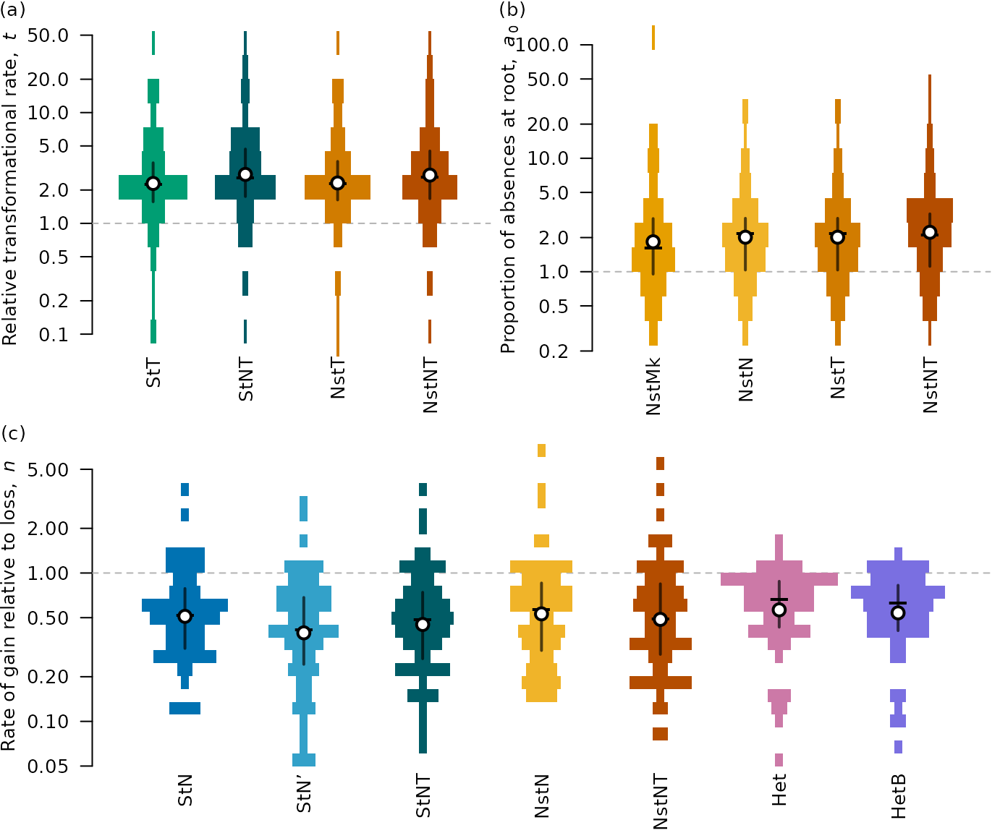

vignettes/parameter-values.Rmd
parameter-values.Rmd
library("neotrans")
modelsT <- c("by_ki", "by_n_ki", "by_t_ki", "by_nt_ki", "rm_by_t_ki")
rateT <- data.frame(
by_t_ki = vapply(KiProjects(), function(pID) {
1 / ExistingResults(pID, "by_t_ki",
checkRemote = FALSE)[["parameters"]]["50%", "rate_neo"]
}, double(1)),
by_nt_ki = vapply(KiProjects(), function(pID) {
1 / ExistingResults(pID, "by_nt_ki",
checkRemote = FALSE)[["parameters"]]["50%", "rate_neo"]
}, double(1)),
ns_t_ki = vapply(KiProjects(), function(pID) {
1 / ExistingResults(pID, "ns_t_ki",
checkRemote = TRUE)[["parameters"]]["50%", "rate_neo"] %||% {
MakeSlurm(pID, "ns_t_ki"); NA_real_}
}, double(1)),
ns_nt_ki = vapply(KiProjects(), function(pID) {
1 / ExistingResults(pID, "ns_nt_ki",
checkRemote = TRUE)[["parameters"]]["50%", "rate_neo"] %||% {
MakeSlurm(pID, "ns_nt_ki"); NA_real_}
}, double(1))
)## Warning in .GitClone(pID, scriptID): Cloning into '/home/runner/work/_temp/Library/revbayes-repos/748_ns_t_ki'...
## fatal: could not read Username for 'https://github.com': terminal prompts disabled
## Warning in .GitClone(pID, scriptID): Cloning into '/home/runner/work/_temp/Library/revbayes-repos/748_ns_t_ki'...
## fatal: could not read Username for 'https://github.com': terminal prompts disabled## Warning in .GitClone(pID, scriptID): Cloning into '/home/runner/work/_temp/Library/revbayes-repos/4867_ns_t_ki'...
## fatal: could not read Username for 'https://github.com': terminal prompts disabled
## Warning in .GitClone(pID, scriptID): Cloning into '/home/runner/work/_temp/Library/revbayes-repos/4867_ns_t_ki'...
## fatal: could not read Username for 'https://github.com': terminal prompts disabled
root0 <- data.frame(
ns_ki = vapply(KiProjects(), function(pID) {
ExistingResults(pID, "ns_ki")[["parameters"]]["50%", "root_freqs.1."] %||%
NA_real_
}, double(1)),
ns_n_ki = vapply(KiProjects(), function(pID) {
ExistingResults(pID, "ns_n_ki")[["parameters"]]["50%", "root_freqs.1."] %||% {
MakeSlurm(pID, "ns_n_ki"); NA_real_}
}, double(1)),
ns_t_ki = vapply(KiProjects(), function(pID) {
ExistingResults(pID, "ns_n_ki")[["parameters"]]["50%", "root_freqs.1."] %||% {
MakeSlurm(pID, "ns_n_ki"); NA_real_}
}, double(1)),
ns_nt_ki = vapply(KiProjects(), function(pID) {
ExistingResults(pID, "ns_nt_ki")[["parameters"]]["50%", "root_freqs.1."] %||% {
MakeSlurm(pID, "ns_nt_ki"); NA_real_}
}, double(1))
)
a0 <- root0 / (1 - root0)
rate01 <- data.frame(
by_n_ki = vapply(KiProjects(), function(pID) {
x <- ExistingResults(pID, "by_n_ki")[["parameters"]]
if (is.null(x)) {
rep(NA_real_, 1)
} else {
1 / x["50%", "rate_loss"]
}
}, double(1)),
by_nn_ki = vapply(KiProjects(), function(pID) {
x <- ExistingResults(pID, "by_nn_ki")[["parameters"]]
if (is.null(x)) {
rep(NA_real_, 1)
} else {
x["50%", "rate01"]
}
}, double(1)),
by_nt_ki = vapply(KiProjects(), function(pID) {
x <- ExistingResults(pID, "by_nt_ki")[["parameters"]]
if (is.null(x)) {
rep(NA_real_, 1)
} else {
1 / x["50%", "rate_loss"]
}
}, double(1)),
ns_n_ki = vapply(KiProjects(), function(pID) {
x <- ExistingResults(pID, "ns_n_ki")[["parameters"]]
if (is.null(x)) {
rep(NA_real_, 1)
} else {
1 / x["50%", "rate_loss"]
}
}, double(1)),
ns_nt_ki = vapply(KiProjects(), function(pID) {
x <- ExistingResults(pID, "ns_nt_ki")[["parameters"]]
if (is.null(x)) {
rep(NA_real_, 1)
} else {
1 / x["50%", "rate_loss"]
}
}, double(1)),
hg_ki = vapply(KiProjects(), function(pID) {
ExistingResults(pID, "hg_ki")[["parameters"]]["50%", "mean_n"]
}, double(1)),
hg_b_ki = vapply(KiProjects(), function(pID) {
ExistingResults(pID, "hg_b_ki")[["parameters"]]["50%", "mean_n"] %||% NA_real_
}, double(1)))
OutputPlot("param_values", width = 7.2, height = 6, function() {
layout(cbind(c(1, 3), c(2, 3)), heights = c(1, 1))
par(mar = c(2.6, 4, 1, 0.4))
SpindlePlot(rateT, log = TRUE,
ylab = expression("Relative transformational rate," ~
italic(t)),
Behind = function() abline(h = 1, lty = "dashed", col = "grey70"))
Panel(1, 4, -1.5)
SpindlePlot(a0, log = TRUE,
ylab = expression("Proportion of absences at root," ~ italic("a")[0]),
Behind = function() abline(h = 1, lty = "dashed", col = "grey70"))
Panel(2, 4, -1.5)
SpindlePlot(rate01, frame.plot = FALSE,
ylab = expression("Rate of gain relative to loss," ~ italic("n")),
log = "y", width = 2.1,
Behind = function() abline(h = 1, lty = "dashed", col = "grey70")
)
Panel(3, 4, -1)
}) ## Summarize values of
nsModels <- colnames(root0)
nsBF <- GetMarginals(KiProjects(), nsModels)
bestNS <- apply(nsBF, 2, which.max)
a0Best <- a0[cbind(seq_along(bestNS), bestNS)]
shapiro.test(log(a0Best))##
## Shapiro-Wilk normality test
##
## data: log(a0Best)
## W = 0.95781, p-value = 0.02821## [1] 0.6404754
mean(a0Best)## [1] 3.877446## [1] 2.121659
median(a0Best)## [1] 2.224176
mad(a0Best)## [1] 1.5539
t.test(a0Best)##
## One Sample t-test
##
## data: a0Best
## t = 4.9337, df = 63, p-value = 6.207e-06
## alternative hypothesis: true mean is not equal to 0
## 95 percent confidence interval:
## 2.306932 5.447960
## sample estimates:
## mean of x
## 3.877446